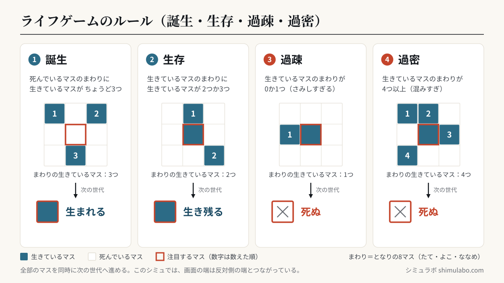
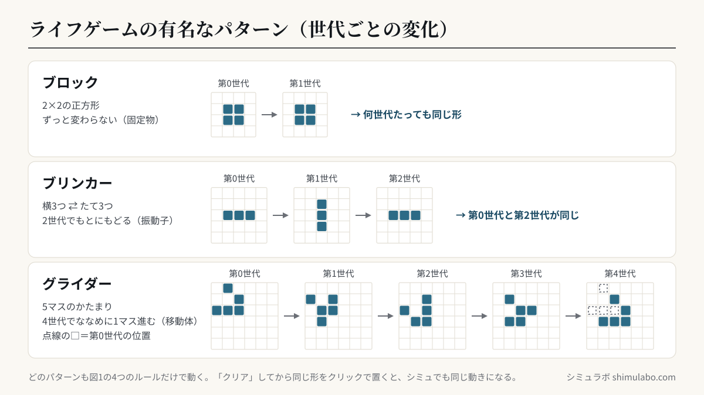

3つのルール
- 生きているセルの周りに2〜3個の仲間 → 生存
- 死んでいるセルの周りにちょうど3個 → 誕生
- それ以外 → 死






図はタップすると大きく表示されます。資料やSNSに使うときは、出典「シミュラボ」とページのURLを添えてください。
1970年に数学者コンウェイが考案。単純なルールから、移動する「グライダー」や永遠に動く構造など、驚くほど複雑なパターンが生まれます。これは「単純なルールから複雑さが生まれる（創発）」の代表例です。
覚えておきたい有名パターン
| 名前 | 形 | ふるまい |
|---|---|---|
| ブロック | 2×2の正方形 | 永遠に動かない（固定物） |
| ブリンカー | 縦3つ→横3つ | 周期2で点滅（振動子） |
| グライダー | 5セルの塊 | 4世代で斜めに1マス進む（移動体） |
| ゴスパーのグライダー銃 | 36セル | 30世代ごとにグライダーを撃ち続ける（無限成長） |
クリックで「グライダー」を置いてみてください。ライフゲーム誕生直後、コンウェイは「無限に増え続ける配置はない」と予想して賞金をかけましたが、1970年にビル・ゴスパーがグライダー銃を発見し、この予想は覆されました。
ライフゲームは「コンピュータ」である
グライダーを信号、衝突をスイッチとして使うと、論理回路（AND・OR・NOT）を組めます。つまりライフゲームの上で、どんな計算でもできるコンピュータを作れる——これをチューリング完全といいます。実際に、ライフゲームの中で動くライフゲームまで作られています。
よくある質問
- 何の役に立つの？
- 創発・複雑系を直感的に理解できる教材として有名です。眺めるだけでも面白いですよ。
- データは送信されますか？
- いいえ。すべてブラウザ内で動作します。
- 最初の密度はどのくらいが面白い？
- セルの3〜4割を生きた状態にすると、数百世代にわたって動きが続きやすいです。多すぎると一気に死に絶え、少なすぎるとすぐ固定物だけになります。
- 必ず終わりが来る？
- 多くの配置はやがて固定物と振動子だけになりますが、グライダー銃のように永遠に成長し続ける配置もあります。「この配置がどうなるか」を一般的に予測する方法は存在しないことが証明されています。